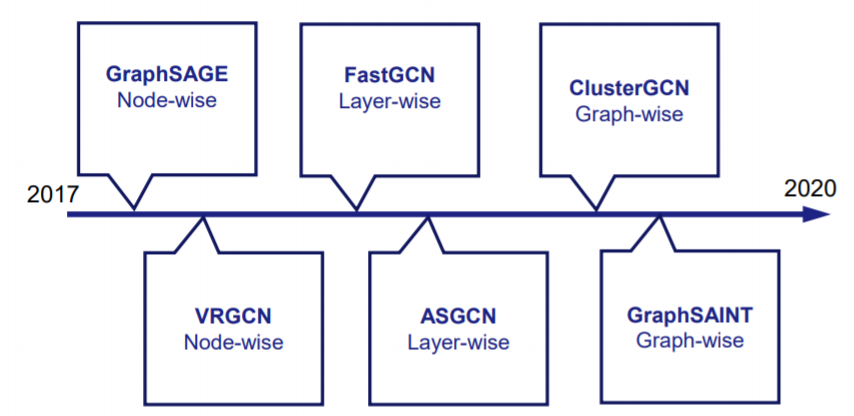

图神经网络论文清单
论文清单：GNN的分布式加速
GNN的分布式训练
[USENIX ATC 19， Linxiao Ma] Neugraph: Parallel Deep Neural Network Computation on Large Graphs
概述：设计了一个支持muti-GPUs的分布式GNN训练框架，提出SAGA-NN的抽象模型，对于符合SAGA-NN的GNN都可以得到支持。
核心技术：图转换引擎（图划分，chunk粒度，类似缩点），流调度器（edge/vertex chunk的调度策略，overlap），图传播引擎（自己优化的kernel，减少数据移动的策略，可惜不开源），基于dataflow的运行时
总结：具有较为完整的系统设计，考虑到了GNN训练中的关键问题，并且具有较为完备的实验评估与分析。其划分图，SAGA-NN的抽象模型值得学习。但是无可供参考的开源代码，图划分的细节没有给出（3.2举例 Kernighan-Lin算法），vertex chunk的内部的传播计算如何实现（sub-chunk?），chain-based的调度方法首次看到（可能以前没发现），并且实验结果的准确性有待商榷。实验部分有关于多GPU加速效果的实验，结果可以参考一下。
[IPDPS 20] PCGCN: Partition-Centric Processing for Accelerating Graph Convolutional Network
概述：这是NeuGraph的“小弟”，投到CCF B类会议。论文的总体内容与NeuGraph相近，但是在System Design的一些细节表述上存在区别。本文的实验重点落在单GPU上加速GCN单一类型。（是否是一条思路）
优点：系统的设计还是比较完整的，针对GCN在单GPU上的性能进行优化，亮点在于实验部分涵盖了文中提及的技术要点。特别是对于数据集的特征的研究，是其它论文所欠缺的。此外，对于GCN网络的hidden size以及层数对执行性能的影响分别做了实验。
结论：相比较于NeuGraph，这一篇的重点在于dual-mode的执行模式，简言之，就是依据稀疏程度来选择使用CSR的压缩方式还是邻接矩阵的形式存储图。
[ IEEE Computer Architecture Letters 20] Characterizing and Understanding GCNs on GPU
概述：分析GCN类负载在GPU上的特征，给出了一些软件优化和硬件设计的思路。
要点
GCN的两个执行模式Aggregation与Combination，两者的执行先后顺序会影响执行性能。
与传统graph processing和神经网络的区别：更长且多变的feature length；NN的参数由所有结点共享；交替执行的训练模式。
结论：软件设计要提高"高度"结点的重复利用率；原子操作向量化（GPU的访存与计算特性）；基于数据流的优化。
[HPCA 20] HyGCN: A GCN accelerator with hybrid architecture
[ICCAD 20] fuseGNN : Accelerating Graph Convolutional Neural Network Training on GPGPU
[SoCC20, Cheng Li] PaGraph: Scaling GNN Training on Large Graphs via Computation-aware Caching
[MICRO 20] AWB-GCN: A Graph Convolutional Network Accelerator with Runtime Workload Rebalancing
这块需要补充几篇论文
[MLSys21 - GNNSys, ] Analyzing the Performance of Graph Neural Networks with Pipe Parallelism
我去。。原来还能这样玩~去年两级流水做出来慢了25%左右，然后就没关注。没想到有人用GPipe的思路也试了一下，结论是慢了，最终发了个Workshop，可以follow一下。
ArXiv
[] DistGNN: Scalable Distributed Training for Large-Scale Graph Neural Networks
图神经网络采样算法概述
NeuGraph中详细介绍了GNN的计算模式，其中一个关键步骤是邻居结点特征的聚合。由于大图中邻居结点数量众多，聚合过程所需占用的资源可能超过单机所能提供的最大值。一种解决方案是划分大图并采用分布式的训练方式，这种方式维持了原有GNN的算法形式，且可以保证收敛性与准确性；另一中解决方案则从算法层面做出改进，对邻居结点进行采样来降低邻居数目，从而减少计算和内存资源占用。
邻居采样算法（Neighbor Sampling Algorithm, 下文简称NS）从采样的层次来看可以分为三类：
- Node-level
- Layer-level
- subgraph-level
下面提到的NS算法都是基于GCN进行设计的，所以对其它类型GNN的支持（通用性）是否可以算一个贡献呢。（ 最近涌现很多关于GNN的新文章，感觉这是个趋势，可以考虑Versatility of Our Future Programming Model）

采样算法
[NIPS 17 , William L. Hamilton] Inductive Representation Learning in Large Attributed Graphs (GraphSAGE)
不同于transductive的学习方式，本文提出了基于“节点-邻居”信息聚合的Inductive学习方法：任意一点 \(v_i\)，对其邻居采样（\(k\) 跳采样数为 \(n_k\)）；从第 \((k-1)\) 跳开始聚合信息，聚合函数为 \(aggr_k\)，直到点 \(v_i\) 拥有所有邻居信息，生成的嵌入为 \(E_i\)；将生成的嵌入作为MLP的输入，进行节点标签分类。
文中定义的聚合函数有三种：Mean Aggregator，LSTM Aggregator，Pooling Aggregator。（还有一个归纳聚合，与Mean的区别在于，目标节点的特征也会一起求平均，而非拼接）
PS：支持无监督和有监督的学习，需要使用不同的损失函数。
- 无监督学习希望目标节点的特征与邻居相似，得到的嵌入可以供下游任务使用。
- 有监督学习，结合具体任务设置损失函数，比如节点分类，可以使用交叉熵。
实验部分和Random Walk、GCN等方法进行对比，且给出了不同聚合函数的表现。
[ICML 18, Jianfei Chen] Stochastic Training of Graph Convolutional Networks with Variance Reduction (VR-GCN) 数学
GCN的计算模式需要聚合所有邻居结点的信息，在此之前的方法的主要贡献是降低采样数量，并提升在“深”层网络中的训练效果。但是，诸如GraphSAGE的采样方法并没有理论证明保障收敛性，并且（\(D^1 \times D^2 = 250\)） 的采样数量还是过大。所以，本文的亮点（亦部分reviewer是槽点）是大段理论证明：证明能收敛。
实验选取了六个数据集，结果显示本文的方法能够减小NS在相同感受野的梯度的bias和variance（GraphSAGE是存在bias的，这个可以理解为用mini-batch来估计full-batch的梯度）。特别的，仅采样\(D^l=2\)的邻居，其算法可获得与精确（Exact）算法一样 预测 精度。
[ICLR 18, Jie Chen] FastGCN: Fast Learning with Graph Convolutional Networks via Importance Sampling
[SIGKDD 18, Hongyang Gao] Large-Scale Learnable Graph Convolutional Networks
\(LGCN_{sub}\)结构融合了邻居节点的特征采样以及图像上的卷积运算，感觉并这种结构不适用于大规模的图以及特征较长的图（实验中用的是三个小图）。
也是基于采样的学习方式，支持Transductive和Inductive Learning：
- 对于一张完整的图，LGCN会采样出若干张子图作为一个batch，以此解决大图上的训练问题，降低计算和内存开销。
- 依据特征各个维度排序大小关系，仅选取 \(k\) 个最大的特征构建为grid-like的输入（CNN中的image），然后利用1-D卷积提取特征。
- LGCN的设计还使用了类似DenseNet的连接结构，这点在深层网络中有好的效果。（DeepGCN用的ResNet形式的结构解决多层GCN层叠加后训练效果下降的问题）
实验部分的表述方式值得学习，但是所用数据集都比较小，方法在大数据集上的表现有待验证。
[SIGKDD 19, Wei-Lin Chiang, Xuanqing Liu] Cluster-GCN: An Efficient Algorithm for Training Deep and Large Graph Convolutional Networks
这篇的想法和之前讨论的求SCC的很相似，应用图聚类算法得到若干个点的聚簇（子图），目的是让聚簇中的边尽量的多，让聚簇间的边尽量少（SCC也可以有这种功效）。而且实验部分表述很详细，实验的设施可以学习，有必要复现以下。
划分图的方式：Metis聚类得到 \(p\) 个独立子图，子图间的边暂时忽略（应该是 \(p\) 等分）
问题：依赖于cluster的结果、去掉了一些边所以需考虑收敛性。
训练：每个batch \(B\) 都会随机选取 \(c\) 个子图参与训练，此时子图间被去除的边需要再连接起来，同样的，特征和标签也需要对应重新编号和分割。
深层次的网络：不同于大多数人选择的类似ResNet中“short-cut”的方法，Cluster-GCN使用“diagonal enhancement”来解决深层网络训练问题。
内存开销：相比VRGCN和GraphSAGE，内存占用有显著下降。（和GraphSAGE类似，可以只保存当前batch的中间数据用于计算梯度--这玩意儿可以用冲计算嘛？是个可以探究以下的点，目前没有看到有人把DNN分布式训练的一些技巧用于GNN）
求出SCC之后需要解决的问题有三个：SCC的大小不一致；去掉一些边之后可能对训练精度有影响；SCC分割之后标签的分布可能出现偏斜。(需要确认一下这种标签分布的不平衡是不是FL中数据non-iid这么一回事儿，如果是的话可以尝试把一些解决方法拿来用：比如分成300个cluster然后分别训练，或者共享一部分数据训练)
[ICLR 20, ] GraphSAINT: Graph Sampling Based Inductive Learning Method
[IPDPS 19, ] Accurate, Efficient and Scalable Graph Embedding
这篇工作既有理论又有系统，很棒。
本文核心为子图采样，在全图上采样出多个子图，然后在子图上训练一个完整的GCN。与前面采样方法的区别在于，采样是在图这一层次的，而非对边或点的采样，所以对于子图来说，局部连接是几乎（完整）保留的。
对于相较原图损失的边，作者设计了无偏的采样方法并且降低方差（variance reduction），也有人质疑子图采样的有效性以及无偏相关理论的推导。这一点也是本文中比较难的。
从实际实验复现的效果来说，超出预期的好。
采样算法的偏差 paper
Mixed NN Training
- Sun J, Zhang J, Li Q, et al. Predicting citywide crowd flows in irregular regions using multi-view graph convolutional networks[J]. IEEE Transactions on Knowledge and Data Engineering, 2020.
- Arindam Paul, Dipendra Jha, Reda Al-Bahrani, Wei-keng Liao, Alok Choudhary, and Ankit Agrawal. CheMixNet: Mixed DNN Architectures for Predicting Chemical Properties using Multiple Molecular Representations. In NeurIPS Workshop on Machine Learning for Molecules and Materials, December 2018.
Federated Graph Learning
概述
目前收集了2019年以来和FGL（Fedrated Graph Learning）相关的论文。其中[1.]指出联邦环境下的图学习任务可分为四类：
Graph Level，即对每一张完整的全图进行分类（这一类与联邦环境下的CV任务相似，目前见得最多的就是该类应用，例如，药物分子分类）
Sub-graph Level，由于数据间保密的需要，不同部门之间的KG被分为多个子图（有点牵强）
Node Level，比如分类任务接下游推荐任务，针对结点（例如，物品或用户）的嵌入，目前还看到了关于交通流的预测任务[25.]
Link Level，尚不明朗
难点：不同场景的数据集怎么搞，选哪个场景；故事怎么讲。
Federated Learning on Graphs
[ICLR'2021 - DPML & MLSys'21 - GNNSys, ] FedGraphNN: A Federated Learning System and Benchmark for Graph Neural Networks
从训练机制上来说，未见明显创新与亮点，只是讲GNN和FL结合，使用的还是FedAvg。
文中提到暂时只是实现了Graph Level的训练任务，其它三种在计划中。
[NeurIPS20, Chaoyang He] FedML: A Research Library and Benchmark for Federated Machine Learning
[non-iid, 浙大 吴飞] Federated Graph Learning - A Position Paper
相当于给FGL的概念一个定位，且将FGL分为四个类型：
- Inter-graph，类似Graph Level，是FL向FGL过渡的最自然形态。
- Intra-graph，每个终端拥有一张完整的图的一部分（子图，但严格来讲可以又重叠的部分，也就是不同终端间子图存在部分相同的点和边）。
- horuzontal intra-graph 图是水平分割的（在同一张图中，割开部分边）。
- Vertical intra-graph 图是垂直分割的 （多张图，部分结点存在跨图的连接关系，即Vertical Connection，例如第一层为KG，第二层为Socail Graph，第三层位Financial Graph）
- Graph-structured，即clients之间的连接可以视作一种关系
文中提及的挑战：
- non-iid, communicaiton efficiency, memory consumption and robustness
[non-iid, arxiv, Yiqi Wang] Non-IID Graph Neural Networks
arxiv 已经投出去了，关注一下
解决的问题：在non-iid的图数据集训练Graph-level分类模型。
主要有三个挑战：不同图的分布不知、单独训练每个分布的模型可能导致部分分布下的可训练数据稀少、测试阶段多模型选择问题
提出的方法：基于adaptor network，利用图结构信息来估计分布；为每一个图训练一个联合模型。
[ICML'21, Yiqi Wang Jiliang Tan] Elastic Graph Neural Networks
汤继良等人的书《图深度学习》有中文版
[imbalance, IJCAI'20 ] Multi-Class Imbalanced Graph Convolutional Network Learning
在真实（图）数据集中，类别分布存在多数与少数，这种多类别样本不均衡现象会导致训练出的模型向多数一方倾斜：点-点之间拓扑联系、不清晰的类别界限（多数一方在特征传播过程中会占据主导地位）
[NeurIPS Workshop 2019] Towards Federated Graph Learning for Collaborative Financial Crimes Detection.
[Arxiv 2021] A Graph Federated Architecture with Privacy Preserving Learning.
[Arxiv 2020] Federated Dynamic GNN with Secure Aggregation. paper
[Arxiv 2020] Privacy-Preserving Graph Neural Network for Node Classification. paper
[SIGKDD21, Binghui (Alan) Wang] Privacy-Preserving Representation Learning on Graphs: A Mutual Information Perspective
[Arxiv 2020] ASFGNN: Automated Separated-Federated Graph Neural Network.
[Arxiv 2020, Binghui (Alan) Wang] GraphFL: A Federated Learning Framework for Semi-Supervised Node Classification on Graphs.
两个挑战：1）FL在non-iid数据上表现不佳，而Graph是non-iid的；2）FL过去侧重于训练同label-domain的数据，但是图数据是会增长的。3）现有FL解决的是有监督学习，不能利用无标签的数据。
解决方法：1）使用MAML+FL的方式，数据不要求为iid：先使用MAML训练一个global-model解决non-iid的Graph数据问题，然后利用现有FL方法优化global-model；2）重新制定MAML并设计新的objective function；3）self-training模型，即利用训练的本地模型来预测无标签的数据，选取the most con fident predictions作为标签，把这些数据加入到训练集中去。
实验采用的两个模型GCN和SGC[1]还是没有足够的说服力，我觉得可以试试采样方法或者GAT等模型。数据集cora、citeseer、Coauthor CS、Amazon2M。
可学习的部分：GCN的self-training，MAML处理non-iid
all clients have the complete graph.”这一块简直不是联邦学习。
PS：在大数据集上也遇到问题，使用基于采样的GCN变体ClusterGCN。
[Arxiv 2021, Chuhan Wu , Xin Xie] FedGNN: Federated Graph Neural Network for Privacy-Preserving Recommendation.
[Arxiv 2021] FL-AGCNS: Federated Learning Framework for Automatic Graph Convolutional Network Search.
[Arxiv 2021] Cluster-driven Graph Federated Learning over Multiple Domains.
[Arxiv 2021] FedGL: Federated Graph Learning Framework with Global Self-Supervision.
[Arxiv 2021] Federated Graph Learning -- A Position Paper.
[Arxiv 2020] FedE: Embedding Knowledge Graphs in Federated Setting.
[Arxiv 2021] Federated Knowledge Graphs Embedding.
[IEEE Big Data 2019] A Graph Neural Network Based Federated Learning Approach by Hiding Structure.
[Arxiv 2020] Locally Private Graph Neural Networks.
[Arxiv 2020, Dongming Han] GraphFederator: Federated Visual Analysis for Multi-party Graphs
[ICLR21被拒, ] CNFGNN Cross-Node Federated Graph Neural Network for Spatio-Temporal Data Modeling paper Code
[Arxiv 2019] Peer-to-peer federated learning on graphs.
paper 这篇不是很相关
Long-tail Graph
深度GNN
非消息传递
- [UESTC 电子科大 Yi Luo，有意思]Distilling Self-Knowledge From Contrastive Links to Classify Graph Nodes Without Passing Messages
Transformer
[ICML 21] PipeTransformer: Automated Elastic Pipelining for Distributed Training of Transformers
[NeurIPS19] Graph Transformer Networks
其他会议
DISTRIBUTED TRAINING OF GRAPH CONVOLUTIONAL NETWORKS USING SUBGRAPH APPROXIMATION submit to ICLR21 (reject)
[KDD 20] Policy-GNN: Aggregation Optimization for Graph Neural Networks
Scalable Graph Neural Network Training: The Case for Sampling
GraphTheta: A Distributed Graph Neural Network Learning System With Flexible Training Strategy Yongchao Liu submitted to VLDB 2022
MLSys21 - GNNSys21 Workshop
https://gnnsys.github.io/
EuroSys21上关于GNN的研究
[EuroSys 21, ] Accelerating Graph Sampling for Graph Machine Learning using GPUs
这篇有点意思，特别优化采样算法在GPU上的并行。
[EuroSys 21, ] DGCL: An Efficient Communication Library for Distributed GNN Training
[EuroSys 21, ] Seastar: Vertex-Centric Programming for Graph Neural Networks
[EuroSys 21, ] FlexGraph: A flexible and efficient distributed framework for GNN training
IWQoS21
- [] Drag-JDEC: A Deep Reinforcement Learning and Graph Neural Network-based Job Dispatching Model in Edge Computing
- [Yu Gu] Glint: Decentralized Federated Graph Learning with Traffic Throttling and Flow Scheduling
KDD21
- [] Global Neighbor Sampling for Mixed CPU-GPU Training on Giant Graphs
- [] Performance-Adaptive Sampling Strategy Towards Fast and Accurate Graph Neural Networks
- [] Scaling Up Graph Neural Networks Via Graph Coarsening
- [] mGAGN:Imbalanced Network Embedding via Generative Adversarial Graph Networks
- [] Learning How to Propagate Messages in Graph Neural Networks
- [] Multi-graph Multi-label Learning with Dual-granularity Labeling
- [] NRGNN: Learning a Label Noise Resistant Graph Neural Network on Sparsely and Noisily Labeled Graphs
- [] Pre-training on Large-Scale Heterogeneous Graph
- [] Representation Learning on Knowledge Graphs for Node Importance Estimation
- [] Tail-GNN: Tail-Node Graph Neural Networks
相关学者
清华大学 刘知远
中科大 唐建 李诚
USC
密歇根 汤继良
北邮 石川
IBM(东京大学毕业) 马腾飞
参考资料
End to End learning in the context of AI and ML is a technique where the model learns all the steps between the initial input phase and the final output result. This is a deep learning process where all of the different parts are simultaneously trained instead of sequentially.
Federated Learning: Survey
- [IEEE Signal Processing Magazine 2019] Federated Learning：Challenges, Methods, and Future Directions. paper
- [ACM TIST 2019] Federated Machine Learning Concept and Applications. paper
- [IEEE Communications Surveys & Tutorials 2020] Federated Learning in Mobile Edge Networks A Comprehensive Survey. paper
这块需要补充几篇论文
GNN: Survey
- [IEEE TNNLS 2020] A Comprehensive Survey on Graph Neural Networks. paper
- [Arxiv 2018] Graph Neural Networks-A Review of Methods and Applications. paper
- [IEEE TKDE 2020] Deep Learning on Graphs-A Survey. paper
- [Arxiv 2017] Representation learning on graphs - Methods and applications. paper
- [软件学报, 张岩峰] 大规模图神经网络系统综述
这块需要补充几篇论文
Mathematics
矩阵范数
Pytorch多标签分类任务
Miscellaneous and Tools
图的聚类或分割算法：Metis，LK，Graclus
CME342 Parallel Methods in Numerical Analysis
PDCP_SIAM Load Balancing for Unstructured Mesh Applications
DGL 官方教程 ACM-Hands-on-Part1 ACM-Hands-on-Part2 （DMLC）
Pytorch Geometric Tutorial Pytorch Geometric Doc PyG主要贡献者MATTHIAS FEY
Spektral （TF+Keras）
ML Reproducibility Tools and Best Practices
数据集集合
| 项目名称 |
|---|
| PASA |
| Fedrated GCN |
| GCN的理解 |
| GAT |
| 一个有趣的人的工作 |
| 云计算学习Cloud Atlas |
| GNN论文笔记 |
- Simplifying graph convolutional networks. ICML. 2019. ↩︎
本博客所有文章除特别声明外，均采用 CC BY-SA 4.0 协议 ，转载请注明出处！